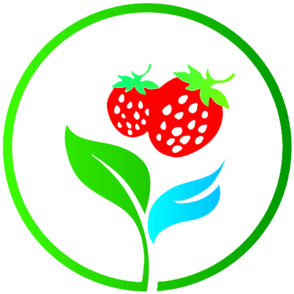

登录
登录
Your browser does not support the video tag.
光深科技管理平台

CO2 浓度
检测光照
检测湿度
检测温度
关闭
June
一
二
三
四
五
六
七
光深科技0
管理员: 张三
数据展示
点击下方按钮前往可视化平台
可视化平台
草莓成熟度：
20%
环境湿度：
60%
环境温度：
22°C
光照强度：
15000 lux
作物生成情况：
良好
灌溉
关闭
通风
关闭
运输
关闭
遮阳
关闭